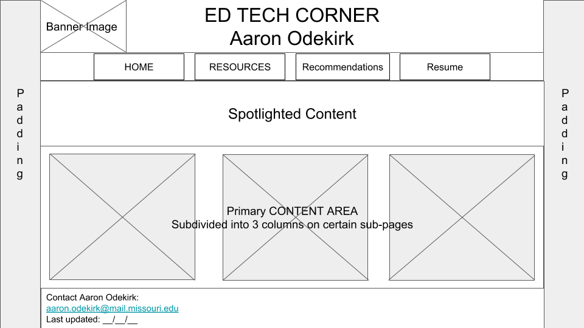

Purpose
Over the past 3 years as part of my current position I have collected a variety of educational tools and resources I find beneficial from many different sources. I often share these resources with other educators in my district, however depending on the source of information, many of these external websites have been created as a hobby or personal project by individuals without web design experience. Because of this, finding the same resource can be challenging for others, and often those sites are difficult to navigate. Creating a hub that links directly to the desired resource will help those who I work with find information quicker.
I have also created a variety of tools and resources, and have needed a platform from which to easily share and distribute those resources for a while now. This website will also serve as a platform from which to share my resources and presentation materials.
Finally, I am looking to expand my voice. I believe I have a useful set of skills that would be of benefit to a wider audience than solely my current district, and would like to grow my platform. To do that, I will need a place to provide interested persons information about myself.
Data Collection and Summary
Survey Questions:
- When looking for educational resources/tools in the past what websites/resources have you used in the past?
- Regarding the above resource, what about the resource(s) did you find most beneficial?
- How often do you find yourself visiting websites with education resources/technologies?
- Do you often leave comments or feedback on websites? Why, why not? What is your preferred method for doing so?
- Do you follow any education blogs or professionals regularly? What do you like about their message or the way they convey information?
- How important is the design of a website, it's look and feel? What kinds of design elements do you appreciate, what design elements do you dislike?
- How do you prefer the content of a website be presented? How do you best receive information?
Summary of Responses:
- All interviewees use some form of social media to gather information, and most use either Twitter or Pinterest as a primary utility from which they gather information. Interestingly a few interviewees listed Google as a source of information, however based on their response a better description might be as a curation platform. This leads me to think that, while it may be beyond the scope of this particular class, possibly adding some social media component would be valuable to increase and retain traffic on my website. It also lets me know that I should take a look at the metrics google search uses to push information toward the top of search results, this would also increase traffic to my site and help grow its popularity.
- From these websites people mostly listed the ability to search through a large amount of information quickly as their primary reason for utilizing the resource. As I would expect among teachers, highly listed on the peoples responses was the necessity for information to be linked back to research-based strategies and core-aligned content. This leads me to think that highlighting resources that are research-based will help retain teachers and educators as my primary audience.
- All by one of my interviewees stated they used their preferred source of education information daily, with one exception listed as weekly. This tells me that once we have determined what resources we find have value and meaning for us, we tend to visit more frequently. The top social media sites being used also tend to invest heavily in studying visitor retention and "bounce-time".
- Most interviewees stated they had not left comments or feedback on websites, in fact only 1 said they had. Most said they wouldn't do that, and preferred to "lurk" on the websites. I find this interesting because most websites have some form of comment section for individuals to interact, however it appears most of the people did not care to participate in this forum. I find this interesting considering one of the higher listed resources was Twitter. Based on the responses I got, I should have followed up and asked why they didn't participate in those forums, or preferred to lurk.
- Those interviewed indicated they liked short and to the point information they would be able to "turn around and use quickly". This helps me now that for my website it will be better to keep short and quick tools up front to "hook" users in, and perhaps keep items requiring longer explanation on a different level of the website. Time is a valuable commodity for educators, and having quick access to tools that work is essential for us.
- By far, intervieweees stated ease of navigation was the most important element for them above all others. Based on what I have read and learned thus far in the course, I believe my colleagues were indicating a very strong preference for a hierarchical site layout. In my last assignment I included my "header" content as sticky so it would scroll with the page, and I wasn't sure if that was the correct design decision, however after interviewing some of my colleagues, I believe this should become a core feature of my website, to make navigation easier.
- Visuals were a core element mentioned by those interviewed. Considering Pinterest was a highly listed resource among them, this does not surprise me. Most social media websites include visuals as a core component and way of passing along information. Interviewees also listed a clean, clutter-free, layout as a key component of their vieweing. This makes me think using a table, without borders showing, could be an easy way to keep elements aligned with each other and consistent along the page. One interviewee stated they did not like clicking on multiple links to find the information they wanted, again reinforcing the necessity of having easily accessible information on the website.
Use Cases
Case 1 - A 1:1 initiative
This past school year my school district went 1:1 in grades 7-12 with Chromebooks, meaning that all students would have access to devices throughout the school day and would take them home at the end of the day. Throughout this process we looked at other school districts and plans to determine what would work best for our context. The resources section of my website will contain information regarding our 1:1 initiative plans and the decision making process we went through. Educators looking for 1:1 examples for school districts similar to our size and student population would find this information useful as they consider what their own initiative would look like. To differentiate this from other resources, this site will contain specific information about a Wi-Fi "Drivers License" we have implemented to support students at different levels of ability/responsibility regarding technology use. Someone looking for information on how best to support a 1:1 initiative in their district might find this useful either from information our district has, or from the resources we looked at while making our decisions.
Case 2 - Google For EDU
My district has becme a Google school over the course of the past 4 years, and as we have done so, have collected and presented information on a variety of topics. A user would be able to use the Resources portion of the website to obtain presentation information and resources on what it means to be a "Google School" and also have access to a wide variety of grade-level and subject aligned content the user could use in their school district as they consider a similar process. The resources page would be valuable for this user, along with having a specific sub-component of the page about the different Google tools we have used.
Case 3 - A Presentation Session
As an Instructional Coach I have presented at a variety of conferences, and Professional Development sessions. A participant in one of these sessions could utilize my website to learn more about who I am and what work I have done beyond the scope of the presentation. Through this website they would also be able to access some of the tools/utilities I have created in the past. Participants would also have an easy forum through which to contact me for further information and share the contents in their district. The landing page would help provide inforamtion as to who I am, in addition to my resume page, where they would be able to learn more about me and my work history. The resources page would offer them information on the contents of the presentation itself.
Design Concept
Target Audience
The target audience for this website is professional educators who work in a K-12 based context, public or private. The overall goal is to appeal to a wide variety of educators who are looking for technology-focused resources and information to integrate into their lessons. Many of these websites exist already, however what is needed is a better way to curate these sources, and bring some of them to the surface beyond a google search. A complaint among those I have worked with previously is a form of information overload, There are so many resources available and it becomes hard to find either what they are looking for, or quality sources of information. This website will serve as a way to help alleviate this issue for professional educators. As a technology-focused website the idea target is someone who has access to technology in their classroom, and has internet access. My plan currently, is to include a variety of resources aligned with different levels of technology integration abilities. Doing so will give people at different stages an entry point to the website and appeal to a wider audience, acknowledging we all exist along a continuum of practice.
Reference Websites
Coffee for the Brain
I previously reviewed this website for a past assignment as one with a purpose similar to mine. One of the issues I found with this website was its lack of consistent layout, and issues with navigation. Based on my questionaire responses, I am including this website as an example of navigation and layout I should avoid in my final website.
Kathy Schrock's Guide to Everything
As another website I had previously looked at, I am including this as an example of a clean and consistent layout that offers users an easy navigation style, in contrast to the example included above. One negative with this site is that some of the primary links go to external websites without clear indication of that.
The Principal of Change
I have been a follower of George Couros for a few years now and always appreciate his message and presentation style. This website is being included as a cleaner blog-style website as compared to the first website listed above. Based on my questionaire responses I believe it could still use some work on ease of navigation, especially when scrolling throughout the page.
Common Sense Media - Reviews & Ratings
As part of my final project will include a hub of resources, I am including this as a resource I have shared with other educators. The website is clean, consistent with colors and layout, and include images. These were all things my interviewees stated as being important for the website. It is also easy to navigate within the page to find resources through filters, and works to keep clicks to a minimum. A similar, ordered layout will be an important consideration for my website and resource presentation.
Dangerously Irrelevant
This website is similar to The Principal of Change website listed above, but has a slightly more cluttered layout with some clashing color themes. For my eyes, the text colors on the website do not contrast enough and takes a bit more to distinguish between different sections. What this does have, that the other example lacks, is an easily accessible search function. I do not think I would be able to include this without templating or JavaScript, however could be an important consideration beyond the scope of this class.
Presentation Information
Content Synopsis
Information will be presented in a hierarchical site organization. A sticky header will remain at the top of the page as the visitor scrolls. Navigation elements will be contained within this sticky header, ensuring easy access to other pages within the site and a consistent look. Tables will be used to ensure consistent formatting, alignment, and appearance for visitors across different pages within the website.
Rationale of Organization
Home Page
- This page will serve as an About Me style page where users can learn more about who I am, what my beliefs are, and provide information on how to find other resources within the site. This page could also present blog-style information or links to posts I have made elsewhere. I haven't gotten into blogging, so as of right now, there is not a wealth of information to include in a "blog" section. Each page will consist of padding on the left and right side of the screen. As I have browsed websites on my phone I'm noticing their desktop counterparts are including padding on the left and right of the screen to help focus user attention and make the transition to mobile easier. My current plan in the primary content areas is to organize it as tables to ensure consistent spacing among the elements in different rows.
Recommendations
- Information will be organized in a table structure with 3-4 columns/row. Each resource will contain an image, a description of the resource, its primary content area, grade level, and a clickable link to the resource
My Resources/Portfolio
- Structurally this page will be similar to the Recommended Resources, but instead will contain a sample of the resources/presentations I have created. This information is being kept separate to help users delineate between what I have made and the work done by others that I am recommending.
My Resume
- This page is fairly self explanatory and will give users a quick bio of my work history and what I have done in previous positions. My rational for keeping this separate is that not everyone who would visit the Home Page would be interested in seeing a resume included there.
- Elements on this page will be listed using unordered lists with different sections contained within DIV elements on the page. Contanint elements within a DIV will make it easier to navigate back to and edit later if changes are necessary.
Wireframe of organization
The wireframe below was created on a 16x9 page as a common layout for modern desktop screens. Padding on the left and right is included and all pages will follow the same basic scheme to ensure consistentcy between pages in the site
Text Organization of Website
Home Page
- Banner logo with scrolling navigation
- Spolight Content
- About Me
- A short statement of my beleliefs
- What you'll find on this website
- A brief summary of each page and what purpose it serves
- About Me
- Primary content area: Blog posts/links
- Organzed top-down blog posts. Each post consisting of an image, date posted, title and contents of the post
- Footer
- Contact Information
- Last updated
My Resources/Portfolio
- Banner logo with scrolling navigation
- Content area organized into sections w/ tables columns of 3-4
- Chromebook & Google resources
- 1:1 Initiative Resources
- WiFi Driver's License
- Parent Presentations
- Parent Tech Modules
- Lists of other resources I have created organized by topic
- Computer Science
- CS50 Resources/links
- AP CSP Standards Documents
- Example projects
- Lesson Planning Tools
- SAMR Resources
- Trudacot example
- Technology Integration Lesson Design Assistant
- Technology Integration Reflection Tool
- Breakout EDU
- Planning Document
- A list of breakouts I've designed
- Instructional Coaching Resources
- Computer Science
- Footer
- Contact Information
- Last updated
Recommendations
- Banner logo with scrolling navigation
- Resource Spotlight
- The top area will spolight a useful tool/resource on a rotating basis
- A table with 3-4 columns per row to highlight a set of recommended resources. The table will be styled to look like cards. A few example resources below.
- Chrome Extensions: Google Keep, LastPass, AdBlock, Save to Drive, PrintFriendly, Pocket, Extensity
- GSuite Addons: FormMule, Draftback, Translate for Docs, PollEverywhere for Slides
- Other Utilities: Awesome Tables, Airtable, Draw.io, Lucidchart, Peardeck, Padlet, Google My Maps, Socrative, Kahoot!, Code.org
- Footer
- Contact Information
- Last updated
My Resume
- Divided into sections, separated by HR elements
- Education
- Work Experiences
- Additional Information
- Footer
- Contact Information
- Last updated
Media
- A valuable resource I've used before is Pixabay. This website contains both links to stock images and also has a wide variety of creative commons licensed materials, some of which do required and many of which are listed with free-use no attribution requied.
- Another resource is from the Creative Commons website, and lets you specify the type of license you are looking for, from a variety of resources. Attribution will be given per the guidelines presented on the resource where it was found. If no license is listed I will assume it to be restricted without use.
- For items without attribution it is my intent to credit the artist and provide a link to url where the image/media was found.
Color Scheme and Rationale
My website will consist of a mostly monochromatic colors with complementary colors as an accent feature. Adults tend to prefer very ordered and simple website designs, and my interviews would back up that information. I selected the darker blue as most people find that color to be pleasing and is easy on the eyes. For a small element of contrast, the navigation element contains a white background with the blue lettering to draw attention towards it. H1 and H2 elements will have the same color scheme as the header element to distinguish between different sections of the document. H3 elements will consist of a light gray-colored header to contrast different sub-sections wtihin a header. I used the utility at paletton.com to create my color scheme. For trial purposes this color scheme was used in this document.